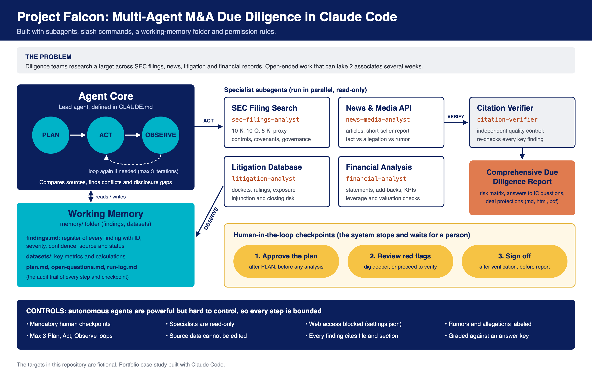

An AI diligence team that researches an acquisition target across SEC filings, news, court records and financials, connects what no single source shows, and drafts an Investment Committee report, with people approving each stage.
Diligence takes teams of associates weeks of reading filings, news, dockets and data-room financials, and the worst issues hide between sources. Autonomous agents could help, but they are the hardest AI pattern to control, so high-stakes work needs human checkpoints.
CLAUDE.md) running a bounded Plan, Act, Observe loop (at most three iterations).Two backtests ran on a real company's SEC filings as of a cutoff date (2018 and 2014), with a hypothetical deal and a key of warning signs the later public record showed mattered. Limits first: one company each, picked by a session that knew the outcome; no distractors, so false alarms are untested; the companies and reports stay private. Found: 10 of 10 signs, then 5 of 8 plus 3 in part (81.3% scored, 62.5% on full finds alone). Both: 0 unsupported findings, 0 hindsight leaks.

Professional setup, for a team doing 20 deals a year, with the one-time setup spread over 3 years. Every figure is a range from low to high.
| Line item | US$ per deal | Bar, on a US$0 to US$15,000 scale |
|---|---|---|
| Data subscriptionsLexisNexis news, litigation research, Capital IQ or PitchBook, data room access | 2,500 to 7,750 | |
| Claude Enterprise planzero data retention, needed for client data | 250 to 1,000 | |
| Connector maintenanceAPIs and formats change | 250 to 750 | |
| One-time setupfour connectors, security and license review, pilot; spread over 3 years | 417 to 1,250 | |
| Agent runs2 to 3 runs per deal | 300 to 1,500 | |
| PACER court recordsUS$0.10 a page, US$3 cap a document | 0 to 30 | |
| Senior review4 to 8 hours at US$100 to US$300 | 400 to 2,400 | |
| Total per deal | 4,117 to 14,680 |
| Line item | US$ per deal | Bar, on a US$0 to US$15,000 scale |
|---|---|---|
| Reading SEC filings50 hours | 5,000 to 15,000 | |
| Financial analysis40 hours | 4,000 to 12,000 | |
| News review15 hours | 1,500 to 4,500 | |
| Litigation review15 hours | 1,500 to 4,500 | |
| Cross-checking sources20 hours | 2,000 to 6,000 | |
| Writing the report20 hours | 2,000 to 6,000 | |
| Data subscriptionsthe same licenses | 2,500 to 7,750 | |
| PACER court recordsthe same pages | 0 to 30 | |
| Senior reviewthe same 4 to 8 hours | 400 to 2,400 | |
| Total per deal | 18,900 to 58,180 |
| This system | Manual | |
|---|---|---|
| Elapsed time | 2 to 5 hours of agent runs, then the review: 1 to 2 working days | about 2 weeks (10 working days), then the review |
| Person-hours | 4.1 to 9.1: 0.1 to 1.1 at the checkpoints, 4 to 8 of review | 164 to 168: 160 of analyst work, 4 to 8 of review |
| Saved | 155 to 164 person-hours a deal, about 95% to 98% fewer | |
| US$ a year | |
|---|---|
| This system | 82,340 to 293,600 |
| Manual first pass | 378,000 to 1,163,600 |
| Saved | about 296,000 to 870,000 |
| Hours saved | 3,100 to 3,280 person-hours |